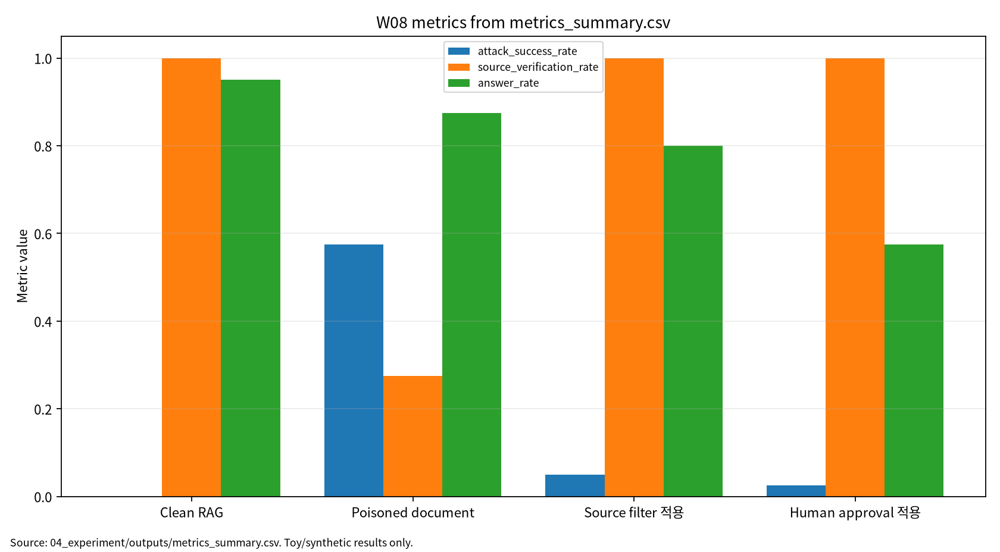

| 항목 | 내용 |
|---|---|
| 주차 | W08 |
| 작성자 | 박영세 |
| 학번 | 26200122 |
| 주제 | RAG·프롬프팅 프레임워크 & 프롬프트 인젝션 |
| 문서 상태 | 제출용 보고서 |
| 작성·보완일 | 2026-06-22 ~ 2026-06-23 |
| 실험 근거 | 04_experiment/outputs/metrics_summary.csv, results.json, run_log.md |
본 보고서는 RAG, GraphRAG, prompting framework의 기본 구조를 정리하고, 검색 문서와 graph evidence에 포함된 indirect prompt injection이 LLM 답변과 tool action에 미치는 위험을 분석한다. 문헌 5편을 통해 GraphRAG workflow, graph-based RAG 기능, prompting framework 계층, prompt injection taxonomy, 의료 LLM 취약성 사례를 비교하였다. 실습은 synthetic RAG 문서 기반 안전 toy 실험으로 수행했으며, rule-based toy evaluator를 사용해 실제 LLM/API 호출이나 실제 공격 재현 없이 source filter와 human approval gate의 평가 구조를 확인하였다. 수치는 실제 RAG 제품 성능이 아니라 평가 형식 검증용 결과로 해석한다.
RAG 보안은 retrieved context를 신뢰하기 전에 source, provenance, tool permission, human approval을 검증해야 하는 LLM application 보안 문제다[1][2][3][4][5].
W08은 W07의 LLM 보안·프라이버시 평가를 RAG와 agentic LLM application으로 확장한다. W07이 prompt, context, output, log, benchmark를 보호 자산으로 보았다면, W08은 retrieval source, vector DB, graph node/edge, retrieved context, tool permission, human approval gate를 추가한다. 핵심 목표는 RAG, GraphRAG, prompting framework 구조를 이해하고 direct/indirect prompt injection과 RAG 문서 오염 위협모형을 정의하는 것이다.
핵심 질문은 다음과 같다.
표 1. W08 핵심 개념과 보안 연결
| 개념 | AI 원리 | 보안 연결 |
|---|---|---|
| RAG | 외부 근거를 검색해 LLM context에 넣는다. | 오염 문서가 indirect injection 경로가 된다. |
| GraphRAG | node, edge, path, subgraph를 검색·생성에 활용한다[1]. | graph provenance 검증이 필요하다. |
| Graph-based RAG | graph 기능을 database, algorithm, pipeline, task 수준으로 분해한다[2]. | source verification 범위가 graph element로 확장된다. |
| Prompting framework | data/base/execute/service level로 LLM application을 설명한다[3]. | prompt boundary와 tool 권한을 계층별로 점검한다. |
Prompt injection 연구는 direct, indirect, multimodal injection과 방어 전략을 체계화한다[4]. Safety-critical domain에서는 prompt injection이 잘못된 의료 조언과 같은 실제 피해로 연결될 수 있다[5]. 따라서 W08의 보안 분석은 answer quality만이 아니라 ASR, source verification, tool misuse rate, faithfulness, answer rate를 분리해 기록한다.
그림 1. RAG 간접 프롬프트 인젝션 평가 흐름
User Query
-> Retrieval / Graph Retrieval
-> Retrieved Context / Graph Evidence
-> Source Verification / Provenance Check
-> LLM Generation
-> Tool Action Request
-> Human Approval Gate
-> Final Answer / Action Log
-> Evaluation: ASR, Source Verification, Tool Misuse, Faithfulness, Answer Rate
표 2. 관련 문헌 5편 요약
| ID | 문헌 | 활용 | 검증 상태 |
|---|---|---|---|
| P01 | Peng et al., Graph Retrieval-Augmented Generation: A Survey | GraphRAG workflow | arXiv 확인, DOI 미확정, 강의계획서 Shiyu Chen et al. 표기 확인 필요 |
| P02 | Zhu et al., Graph-Based Approaches and Functionalities in Retrieval-Augmented Generation: A Comprehensive Survey | graph 기능과 provenance | DOI 10.1145/3795880 확인, Jianxiang Li et al. 표기 확인 필요 |
| P03 | Liu et al., Prompting Frameworks for Large Language Models: A Survey | prompting framework 계층 | DOI 10.1145/3789253 확인 |
| P04 | Geng et al., Prompt Injection Attacks on Large Language Models | 공격·원인·방어 taxonomy | DOI 10.32604/cmc.2025.074081 확인, Tianlei/Tongcheng 표기 확인 필요 |
| P05 | Lee et al., Vulnerability of LLMs to Prompt Injection When Providing Medical Advice | safety-critical 사례 | DOI 10.1001/jamanetworkopen.2025.49963 확인, 강의계획서 제목 확인 필요 |
P01/P02는 GraphRAG와 graph-based RAG 구조 문헌이고, P03은 prompting framework와 agentic LLM application layer 문헌이며, P04는 prompt injection taxonomy와 방어전략 문헌이다. P05는 safety-critical medical advice 사례 문헌이다. W08의 핵심 연결부는 retrieved context를 신뢰하기 전에 source, provenance, tool permission, human approval을 검증해야 한다는 점이다.
표 3. W08 Research Track 요약
| 항목 | 내용 |
|---|---|
| 연구문제 | Source verification과 human approval gate가 RAG indirect injection과 tool misuse를 줄일 수 있는가 |
| 대상 시스템 | RAG, GraphRAG, tool-using agent |
| 위협 | document poisoning, source spoofing, graph edge/path manipulation, tool misuse |
| 방어 | source filter, provenance validation, tool permission policy, human approval gate |
| 평가 지표 | Retrieval Relevance, ASR, Source Verification, Tool Misuse Rate, Faithfulness, Answer Rate |
본 실습은 실제 LLM/API 호출이나 실제 prompt injection 공격 재현이 아니라 W08의 핵심인 RAG 보안 평가축을 안전하게 설명하기 위한 최소 toy protocol이다. 따라서 synthetic RAG 문서와 rule-based toy evaluator를 사용하되, 평가 구조는 이후 실제 RAG, GraphRAG, agentic tool-use 환경에도 확장 가능하도록 retrieval relevance, ASR, source verification, tool misuse rate, faithfulness, answer rate, source block rate, human block rate, reproducibility evidence로 분리하였다.
표 4. W08 실습 설계
| 항목 | 내용 |
|---|---|
| Dataset | Synthetic RAG documents |
| Evaluator | Rule-based toy RAG prompt-injection evaluator |
| Conditions | Clean RAG, poisoned document, source filter, human approval |
| Samples | 40 per condition |
| Seed | 42 |
| Outputs | metrics_summary.csv, results.json, run_log.md |
표 5. W08 실습 결과
| 조건 | Retrieval Relevance | ASR | Source Verification | Tool Misuse Rate | Faithfulness | Answer Rate | Source Block Rate | Human Block Rate |
|---|---|---|---|---|---|---|---|---|
| Clean RAG | 0.907887 | 0.000000 | 1.000000 | 0.000000 | 0.907613 | 0.950000 | 0.000000 | 0.000000 |
| Poisoned document | 0.690091 | 0.575000 | 0.275000 | 0.125000 | 0.458069 | 0.875000 | 0.000000 | 0.000000 |
| Source filter 적용 | 0.776926 | 0.050000 | 1.000000 | 0.025000 | 0.778693 | 0.800000 | 0.892857 | 0.000000 |
| Human approval 적용 | 0.764926 | 0.025000 | 1.000000 | 0.000000 | 0.840805 | 0.575000 | 0.814815 | 1.000000 |
Poisoned document 조건의 ASR 0.575000은 실제 RAG 제품의 공격 성공률이 아니다. Human approval gate 결과도 실제 운영 방어 효과 보증으로 표현하지 않는다. 이 결과는 synthetic RAG document와 rule-based toy evaluator를 사용한 평가 형식 검증용 수치이며, 실제 LLM 보안 성능이나 실제 RAG 제품의 안전성으로 일반화하지 않는다.
그림 7. W08 metrics summary chart

출처: 04_experiment/outputs/metrics_summary.csv. 이 그래프는 공개 toy/synthetic 산출물 기반이며 실제 공격 성능이나 운영 환경 성능으로 일반화하지 않는다.
AI 도구는 문헌 요약, 코드 점검, 문장 구조화, 그래프 생성 보조에 사용하였다. 모든 DOI/URL, 실험 수치, 본문 인용, 결론은 작성자가 outputs 파일과 로컬 참고문헌 검증표를 대조하여 검증한다.
표. W08 AI 도구 활용 및 검증 기록
| 항목 | 내용 |
|---|---|
| 사용 도구명 | Codex, ChatGPT 계열 도구 |
| 사용 일자 | 2026-06-23 |
| 사용 목적 | 문헌 요약 정리, 보고서 구조화, 안전한 toy/synthetic 실험 결과 표기 점검, 그래프 생성 보조, 제출 전 체크리스트 정리 |
| 주요 프롬프트 요약 | 주차별 제출 보고서 보완, 참고문헌 검증표 정리, metrics_summary.csv 기반 그래프 생성, AI 활용 고지 작성 |
| AI 산출물 반영 위치 | 07_week_submission/w08_submission_report.md, 07_week_submission/assets/w08_metric_chart.png, 05_ai_worklog/ai_disclosure_draft.md |
| 본인 수정 내용 | 주차별 문헌 상태 확인, 실험 수치와 outputs 대조, 안전 범위와 한계 문장 확인, 최종 제출 전 미확정 문헌 분리 |
| 사실관계 검증 방법 | 01_papers/paper_list.md, 01_papers/doi_check.md, 05_references/doi_index.md, 강의계획서 문헌표 대조 |
| 참고문헌 검증 방법 | 제목, 저자, 연도, 학술지/학회, DOI/URL, 본문 인용번호와 참고문헌 목록 대응 확인 |
| 실험결과 검증 방법 | 04_experiment/outputs/metrics_summary.csv, results.json, run_log.md의 수치와 보고서 표기 대조 |
| 최종 책임 확인 | AI 산출물은 초안 보조이며 최종 제출자는 원고 내용, 인용, 실험결과, 연구윤리 책임을 확인한다. |
추천 주제는 "RAG 기반 생성형 AI 시스템에서 간접 프롬프트 인젝션 대응을 위한 출처 검증·승인 게이트 평가 프레임워크"다. 이 주제는 문헌분석, 안전한 synthetic 실험, source/provenance 체크리스트, approval gate 정책 설계로 확장할 수 있다.
표 6. KCI 논문 제목 후보
| 번호 | 국문 제목 후보 | 영문 제목 후보 | 연구방법 | 예상 기여 |
|---|---|---|---|---|
| 1 | RAG 기반 생성형 AI 시스템에서 간접 프롬프트 인젝션 대응을 위한 출처 검증·승인 게이트 평가 프레임워크 연구 | An Evaluation Framework for Source Verification and Human Approval Gates Against Indirect Prompt Injection in RAG-Based Generative AI Systems | 문헌분석 + synthetic RAG 실험 | ASR·source verification·tool misuse 통합 평가표 |
| 2 | 보안형 RAG 시스템의 문서·Graph 출처 검증 메타데이터 설계 연구 | A Study on Document and Graph Provenance Metadata for Secure RAG Systems | 프레임워크 설계 + 체크리스트 | source/provenance 평가 기준 |
| 3 | LLM 에이전트의 Tool 권한 오남용 방지를 위한 Human Approval Gate 연구 | A Study on Human Approval Gates for Preventing Tool Misuse in LLM Agents | toy 실험 + 정책 설계 | approval gate와 answer rate trade-off 분석 |
추천 최종 제목은 "RAG 기반 생성형 AI 시스템에서 간접 프롬프트 인젝션 대응을 위한 출처 검증·승인 게이트 평가 프레임워크 연구"다. 연구문제는 source filter의 ASR·faithfulness·answer rate 영향과 human approval gate의 tool misuse 감소 및 usability cost 분석으로 설정한다.
SCI 제목 후보는 "A Multi-Metric Evaluation Framework for Source Verification and Human Approval Gates Against Indirect Prompt Injection in RAG-Based LLM Systems"다.
표 7. SCI Related Work 축
| 연구축 | 대표 논문 | 역할 |
|---|---|---|
| GraphRAG workflow | Peng et al. 또는 현재 P01 | GraphRAG indexing, retrieval, generation workflow |
| Graph-based RAG functionality | Zhu et al. | database, algorithm, pipeline, task 수준의 graph 기능 |
| Prompting framework | Liu et al. | data/base/execute/service level prompt orchestration |
| Prompt injection taxonomy | Geng et al. | attack methods, root causes, defense strategies |
| Safety-critical prompt injection | Lee et al. | medical advice domain vulnerability and harm potential |
SCI형 구성은 background, problem, method, results, contribution, implications의 structured abstract로 정리한다. 단, W08 toy 실험 결과는 실제 RAG 보안 성능이 아니라 평가 구조 예시로 제한해야 한다.
발표 핵심 메시지는 "RAG 보안은 좋은 검색만의 문제가 아니라 source, provenance, prompt boundary, tool permission, approval log를 함께 설계하는 문제"다. 발표자료는 09_presentation/에 있으며, 발표자료 수치는 outputs 기준과 일치한다.
| 번호 | 문헌 | DOI/URL | 상태 | 남은 검토 사항 |
|---|---|---|---|---|
| [1] | Peng et al., Graph Retrieval-Augmented Generation: A Survey | https://arxiv.org/abs/2408.08921 | 부분 검증 | DOI, ACM CSUR 2025 출판정보, Shiyu Chen et al. 표기 확인 필요 |
| [2] | Zhu et al., Graph-Based Approaches and Functionalities in Retrieval-Augmented Generation: A Comprehensive Survey | https://doi.org/10.1145/3795880 | DOI 확인 | Jianxiang Li et al. 표기 확인 필요 |
| [3] | Liu et al., Prompting Frameworks for Large Language Models: A Survey | https://doi.org/10.1145/3789253 | DOI 확인 | 제목의 ": A Survey" 포함 |
| [4] | Geng et al., Prompt Injection Attacks on Large Language Models | https://doi.org/10.32604/cmc.2025.074081 | DOI 확인 | Tianlei/Tongcheng 표기 확인 필요 |
| [5] | Lee et al., Vulnerability of Large Language Models to Prompt Injection When Providing Medical Advice | https://doi.org/10.1001/jamanetworkopen.2025.49963 | DOI 확인 | 강의계획서 지정 제목과 동일 여부 확인 필요 |
PDF 보관 정책 점검 결과, 01_papers/pdf/의 논문 PDF 원문은 로컬 파일로 보존하되 Git 추적은 해제했다. public GitHub 저장소에는 출판사 PDF 원문 대신 DOI/URL, 서지정보, 요약만 남기는 정책을 적용한다.
| 점검 항목 | 상태 | 비고 |
|---|---|---|
| 1장 한 문장 요약 작성 | 완료 | |
| 2장 학습 배경과 주차 목표 작성 | 완료 | |
| AI 원리 70% 정리 | 완료 | |
| 보안 이슈 30% 정리 | 완료 | |
| 논문 5편 요약 | 완료 | |
| 논문 비교표 보완 | 완료 / 확인 필요 | P01~P05 동일 여부 반영 |
| 실험 outputs 파일 존재 확인 | 완료 | CSV/JSON/run log 존재 |
| 실험 결과와 보고서 수치 일치 | 완료 | outputs 기준 통일 |
| KCI/SCI 섹션 작성 | 완료 | |
| 본문 인용과 참고문헌 대응 | 완료 / 확인 필요 | 서지 불일치 항목 확인 필요 |
| AI 활용 고지 작성 | 완료 | |
| PDF 저작권 위험 점검 | 완료 / 확인 필요 | PDF Git 추적 해제와 보관 정책 문서화 우선 |
| 최종 사람이 검토할 항목 표시 | 완료 | 제출 전 작성자 확인 항목 있음 |